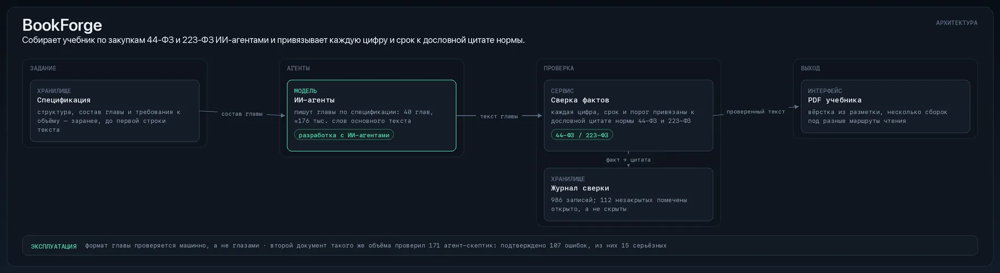

Что мешалоВысокий AUC на перемешанных данных не значит ничего, а по отчёту это не видно.
Что сделалСобрал сбор данных, расчёт признаков и модель ранжирования с проверкой во времени, нашёл утечку данных в первой версии и пересобрал конвейер.
Масштаб
0.576честный AUC после чистки против 0.430 у случайного уровня
Как устроено
Данные из разрозненных источников сводятся в одну таблицу признаков.
Модель проверяется во времени: обучение на прошлом, оценка на будущем.
Каждая метрика сравнивается со случайным уровнем.
Инженерные решения
Ранний результат AUC 0.828 оказался утечкой данных; после чистки модель даёт 0.576 против 0.430 у случайного уровня.
Результаты
Числа сняты с работающей системы и её базы. Наружу идут
только те результаты, которые можно показать кому угодно.
Ранний «прорыв» AUC 0.828 оказался утечкой данных; после чистки модель даёт честные 0.576 против 0.430 у случайного уровня.
Стек и зачем
Данные и базы
SQLite — локальное хранилище: единая схема и миграции
pandas — таблицы признаков и разрезы данных
sklearn — признаки, метрики и валидация модели
Как это выглядит

Как работает RankLab: сводит данные о проектах в таблицу признаков и ранжирует их моделью с проверкой во времени
Связаться
Покажу любую систему вживую за 15 минут: рабочий экран, логи и разбор решений, а не слайды.